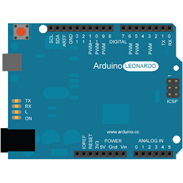
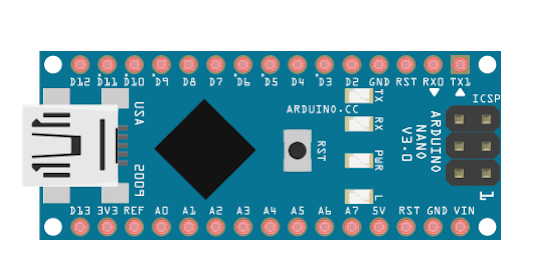

ana sayfa | github adresi | ham sayfa
5. Neden Farklı Arduino Modelleri Var?¶
Arduino, geniş ürün yelpazesine sahip bir marka. Peki neden farklı farklı model çıkarma ihtiyacı duymuşlar? Bu tamamen bizim için, projelerimiz için bir güzellik aslında. Projenize yönelik, spesifik bir Arduino modeli bulabiliyorsunuz. Örneğin nesnelerin interneti konseptine akıllı saksı yaptınız ve saksınıza elektrikler yokken de çalışabilmesi için batarya eklemek istiyorsunuz. Arduino Uno ve Li-Po -li-po bataryalar alandan tasarruf için en uygun bataryalar- şarj devresi ile bu işi çözebilirsiniz. Ya da direk Arduino MKR1000 kullanabilirsiniz, MKR1000 üzerinde Li-Po şarj devresi de bulundurduğu için harici bir devreye ihtiyacınız kalmıyor.
6. Arduino Modelleri¶
6.1. Giriş Seviyesi¶
6.1.1. Arduino UNO¶
En yaygın kullanılan Arduino modeli. Bunun sebebi, direk alıp kullanabilmeniz -örneğin bazı Arduino modellerinde alandan tasarruf için usb-ttl çevirici entegresi bulunmuyor ve arabirim kullanmamız gerekiyor-, internette en yaygın örnek gösterilen model olması, ulaşması en kolay olan model olması ve ucuz modellerden biri olması diyebiliriz. Herhangi kendine has bir özelliği bulunmuyor. Genelde Arduino Shield’leri Uno modelindeki pin dizilimlerine göre yapıldığı için Shield’ler ile uyumludur.

| Mikrodenetleyici | Atmega328P |
| Çalışma Gerilimi | 5V |
| Giriş Gerilimi (önerilen) | 7-12V |
| Giriş Gerilimi (limit) | 6-20V |
| Dijital G/Ç Pinleri | 14 |
| PWM Destekleyen Dijital Pinler | 6 |
| Analog Giriş Pinleri | 6 |
| G/Ç Pini Başına Düşen Akım (max) | 20 mA |
| 3v3 Pinine Düşen Akım (max) | 50 mA |
| Flash Hafıza | 32KB (0.5KB’ını kendisi kullanıyor) |
| SRAM | 2KB |
| EEPROM | 1KB |
| Clock Speed | 16MHz |
| Ölçüleri | 68.6x53.4mm 25gr |
6.1.2. Arduino Leonardo¶
Arduino Leonardo’nun pin bağlantı şeması UNO modeli ile aynı olduğu için onda geçerli olan shieldlerle tam uyumluluk durumu Leonardo için de geçerli. Leonardo farklı olarak ATmega32u4 mikrodenetleyiciye sahip. Bu denetleyicinin özelliği ise -pin sayılarının farklı olması, hafıza farkı dışında, radikal özelliği- dahili USB bağlantı özelliği bulundurması. Yani Leonardo’yu bilgisayara taktığınızda bilgisayar bir fare/klavye takmışsınız gibi hemen tanıyacaktır. Ekstra bir işleme, driver kurulumuna gerek kalmaz. Bu özelliği sayesinde Fare ve Klavye gibi davranabilir ve farenin konumunu kontrol edip klavye gibi girdi işlemleri yaptırabilir.
{kind=link}
| Mikrodenetleyici | ATmega32u4 |
| Çalışma Gerilimi | 5V |
| Giriş Gerilimi (önerilen) | 7-12V |
| Giriş Gerilimi (limit) | 6-20V |
| Dijital G/Ç Pinleri | 20 |
| PWM Destekleyen Dijital Pinler | 7 |
| Analog Giriş Pinleri | 12 |
| G/Ç Pini Başına Düşen Akım (max) | 40 mA |
| 3v3 Pinine Düşen Akım (max) | 50 mA |
| Flash Hafıza | 32KB (4KB’ını kendisi kullanıyor) |
| SRAM | 2.5KB |
| EEPROM | 1KB |
| Clock Speed | 16MHz |
| Ölçüleri | 68.6x53.3mm 20gr |
6.1.3. Arduino Esplora¶
Arduino Esplora, gameboy, PSP gibi el oyun konsolu geliştirmek isteyenler için üretilen bir kart. Bu sonucu çıkarmamız için tasarımına bakmamız yeterli. Üzerindeki donanımlar:
- Joystick
- Reosta
- Isı Sensörü
- Accelerometer
- Mikrofon
- Işık Sensörü
- Ses ve Işık Çıkışları
- Sensör Girişleri
- TFT Ekran Girişleri
{kind=link}
| Mikrodenetleyici | ATmega32u4 |
| Çalışma Gerilimi | 5V |
| SRAM | 2.5KB |
| EEPROM | 1KB |
| Clock Speed | 16MHz |
| Ölçüleri | 164.04x60mm 53gr |
6.1.4. Arduino Nano¶
Arduino Nano modeli UNO modeli ile aynı mikrodenetleyiciye sahip ve aynı pin giriş/çıkışlarına sahip. Ancak kendisinin tasarımı UNO’dan farklı olduğu için UNO’ya uyan shieldler Nano modeline sığmıyor. Peki neden böyle farklı bir yol izleyip farklı bir tasarım yapılmış? Sebebi tamamen boyuttan tasarruf. UNO 25gr iken Nano sadece 7gr.
{kind=link}
| Mikrodenetleyici | ATmega328 |
| Çalışma Gerilimi | 5V |
| Giriş Gerilimi (limit) | 7-12V |
| Dijital G/Ç Pinleri | 22 |
| PWM Destekleyen Dijital Pinler | 6 |
| Analog Giriş Pinleri | 8 |
| G/Ç Pini Başına Düşen Akım (max) | 40 mA |
| Flash Hafıza | 32KB (2KB’ını kendisi kullanıyor) |
| SRAM | 2KB |
| EEPROM | 1KB |
| Clock Speed | 16MHz |
| Ölçüleri | 18x45mm 7gr |
6.1.5. Arduino Mini¶
Arduino Mini, Nano ve dolayısıyla UNO ile aynı mikrodenetleyiciye -bu demek oluyor ki aynı pin giriş çıkışlarına ve hafızaya- sahip. Arduino Nano’nun UNO’dan farklı olarak boyutu olduğunu söylemiştik. Mini modeli ise Nano modelinden de minimal, küçük, tatlı, drone dostu bir kart. Ancak bu ünvanları kazanırken usb-ttl çevirici entegresinden fedakarlık etmiş. Bu demek oluyor ki Mini modelini direk USB kablosu ile bağlayıp programlayamıyoruz, bir arabirim gerekli. Ayrıca fiyat olarak da en uygun fiyata sahip modellerden biri olduğu için fazlaca Arduino gerektiren projeleriniz için ideal bir model olabilir.